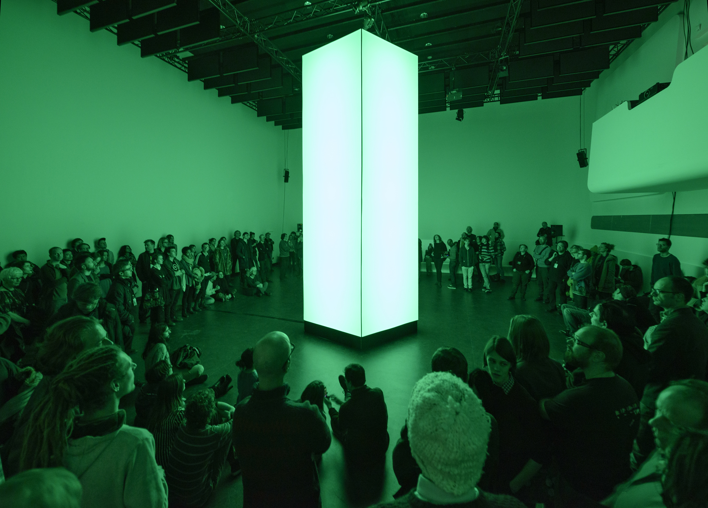

ed. Mirna Belina, Sonic Acts Press : 2019, p.284-309
The first Sonic Acts festival took place a quarter-century ago. What started as an attempt to bridge the gap between electronic dance music and ‘serious’ electronic music has grown into a prominent platform that embraces the latest developments in music, art, technology, science, film, and related fields and presents them to a broad and diverse audience. The history of Sonic Acts mirrors the development of artists’ relationship to technology since 1994. During that time, technology has changed the world in fundamental ways. Along the way, Sonic Acts has shone a spotlight on artists, performances, and artworks that have reflected, and often foreshadowed, those changes.
The first Sonic Acts festival took place on 18 and 19 August 1994 at the music venue Paradiso in Amsterdam. It arose out of a collaboration between the venue and the Royal Conservatoire in The Hague, specifically its Sonology department and Interfaculty of Image and Sound. Sonic Acts aimed to showcase the latest developments in the field known as ‘image and sound’ and technological and digital innovations in the interdisciplinary performing arts.
In 1994, with the burgeoning house music scene and more affordable computers, a new generation of musicians and artists began appearing on stage, making live music and visuals using laptops. A DJ culture emerged, and artistic practice became concerned with mixing sound and image. The dance music scene took on a visual aspect, and VJing flourished, eventually giving rise to ‘live cinema’ as a genre in its own right. For the makers in the Sonic Acts scene, the revolutionary music theatre of the Hollandia group and its productions of works by artists such as Dick Raaijmakers also served as a major source of inspiration. Around the same time, people in the house, techno, and other electronic dance music scenes began to discover the work of their predecessors in the field of serious electronic music, which after being pushed into the margins in the 1980s was attracting attention again thanks to electronic dance music. Looking back today, in 2019, this may seem less than surprising, but in the mid-1990s it was fresh and unexpected. Xenakis meets Autechre; Stockhausen meets DJ Spooky.
After CJP Magazine published an article written by Minou op den Velde on the experiments in live electronics and new-media art being done by the students of Sonology and the Interfaculty of Image and Sound, Paradiso decided to organise a ‘festival of sounds and images’. The club was looking for ways to revamp its programming, and then-director Pierre Ballings gave the green light to the development of a festival ‘in which the experimental composers and sound artists would be confronted with the producers of the new forms of popular electronic music’.
At the time, there were few forums for interdisciplinary and technological experimentation in the Netherlands. The early 1990s also saw the founding of several other new-media and electronic art festivals, including Impakt in Utrecht and DEAF in Rotterdam. They started out relatively small and fulfilled quickly a new role in the Dutch art ecosystem, serving as meeting places for artists, an international community of curators, and audience members interested in new developments in technology and art. Sonic Acts struck a chord with makers and audience members who wanted to know what was happening at the intersection where the audiovisual arts, club culture, music theatre and serious electronic music and sound art came together.
The earliest editions of Sonic Acts provided a stage for young artists exploring the creative possibilities of new technology in depth. They experimented with celluloid, video and Amiga computers and performed using new interfaces for making live electronic music, with close links to projects then being developed at STEIM. During the day, there were demonstrations of new instruments and interfaces; in the evenings, serious concerts segued into a nighttime programme dominated by the emerging VJ, techno, electro and IDM scene. At the second festival, in 1995, talks and workshops were added to the programme and primarily concerned audio technologies, sampling, live electronics, and the history of electronic music. The VPRO broadcasting company’s digital department built the first Sonic Acts website. Among the performers of the early years, standout names include Sensorband (Edwin van der Heide, Zbigniew Karkowski and Atau Tanaka)
, Autechre, Plaid, Mike Paradinas (performing as µ-ziq), and David Toop, who gave an opening address in 1996 on his book Ocean of Sound. In the early years, performances by students studying at the Interfaculty of Image and Sound were a regular fixture at Sonic Acts; the festival was actually part of the curriculum. Students performed new work, usually under the supervision of teachers and theatre-makers such as Frans Evers, Paul Koek, Jan Zoet and Robin Deirkauf.
Sensorband – Edwin van der Heide, Zbigniew Karkowski and Atau Tanaka – performing live at Paradiso at Sonic Acts in 1994. Photo by Pieter Kers.
In 1997 the Dutch filmmaker Frank Scheffer used the Sonic Acts formula for the last instalment of his TV documentary series on twentieth-century music. The broadcast of Sonic Acts: From Stockhausen to Squarepusher, which features footage recorded at the festival, undoubtedly brought it to the attention of a wider public. It also provided some context for the new developments in music and interdisciplinary arts. The 1997 festival included performances by, or of works by, artists including Karlheinz Stockhausen, DJ Spooky, Panasonic and Merzbow. Whether by coincidence or not, the same edition was the focus of an NPS documentary which aired on Dutch public TV in 1998.
DJ Spooky performing at Paradiso, as part of the evening program of Sonic Acts IV, Special VIP Club. Photo by Pieter Kers.
The festival was organised by a constantly changing team, to prevent any formula from arising that could be used in subsequent years. Special attention was paid to the dramaturgy of the programme: evenings of music theatre and serious electronic music melted into nights showcasing the latest developments in dance music. Sonic Acts sought to allow different art forms and disciplines to merge in an integrated programme rather than presenting the genres separately. Alterations were often made to the space to create a fitting context for a particular work. Standard setups – a stage facing the audience with speakers at either side, a black box with a movie screen at the front – were not unquestioningly deployed. This practice remains characteristic of Sonic Acts: since 1995, it has specialised in custom-made installations, from multi-speaker systems to specially built cinematic environments, with the aim of allowing artistic visions to be presented to their full advantage.
In 1999, a thematic unity became visible in the programme for the first time, with a number of performances taking the work of Claudio Monteverdi, the first opera composer, as a point of departure. The 2000 edition marked the first time Sonic Acts had an overarching theme, as expressed in its title: Point-Pixel-Programming. Taco Stolk, Dick Raaijmakers and Vincent Icke gave talks on the subject of the pixel, each from the standpoint of their respective disciplines. Thus did the contours of Sonic Acts in the 21st century emerge: henceforth, it would be a themed festival featuring performances alongside lectures that provided context for the increasingly sophisticated field of digital art, music and culture. That year saw performances by artists such as Barbara Morgenstern, Phoenecia, Carsten Nicolaï, along with Antye Greie-Fuchs.
The approach taken in 2000 was carried forward in 2001 with the theme The Art of Programming and lectures by speakers such as the electronic art pioneer Roy Ascott, the artist Casey Reas – who released the first version of Processing with Stephen Fry in 2001 – and the musician Robert Henke, who put out the first version of Ableton with Gerhard Behles in 2001. The underlying connection between the various programme components was digital-technological culture. A particular focus was placed on artists working with computer-generated images and using software tools such as MaxMSP or the then-infamous NATO. For the first time, an extensive festival book was compiled, containing specially commissioned essays and participants’ writings.
The next edition, which took place in 2003, was entitled Sonic Light and took ‘visual music’ as its theme. The programming was expanded to include a week-long film programme, a three-day conference, a small exhibition, and three nights of live performances and light projections at Paradiso in the specially designed ‘Sonic Light Box’. Sonic Light’s central theme was ‘the fascination held by artists for the creative possibilities offered by giving musical form to light and space’. The Sonic Acts festivals continued to focus on ‘music for the eye’ – abstract films, light projections, expanded cinema, and generative computer visuals – and the spatiality of sound. Sonic Light also paid plenty of attention to historical context, and this would continue to characterise later festivals. Sonic Light featured screenings of films by people such as Oskar Fischinger, Len Lye, Bill Etra, John and James Whitney, Stan Brakhage, and Jordan Belson. Speakers at the conference included the computer graphics pioneer Larry Cuba, Bart Vegter, and Golan Levin. Noteworthy performances included those by Naut Humon and
Maryanne Amacher, as well as those by Christian Marclay, Lia, and Francisco Lopez. The first performer on the night-time schedule was 50-year-old Yasunao Tone, whose radical glitches and prepared skipping CDs amazed his fellow younger generation of musicians. Next up was breakcore pioneer Venetian Snares, who – impressed by Tone’s set – felt the need to take things up a notch in his own overwhelming live DJ set. It all bore witness to a desire to make music using the fundamentals of electronics and digital technology rather than via slick interfaces.
During Sonic Light 2003, the auditorium of Paradiso transformed into a ‘Sonic Light Box’, a space designed by Rubin Deirkauf. Mayanne Amacher can be seen here during her sound check for her performance later that evening. Photo by Kasper van der Horst.
The 10th Sonic Acts, 2004’s Unsorted, explored the idea of information arts – art forms centred on the concept of information – and provided a taste of the investigations that would take place in the years to follow. Musically, the focus was on artists from the Raster-Noton and Touch labels and from the breakcore scene, with performances by the MIMEO orchestra, Fennesz, Chris Watson, and others. In Benjamin Gaulon’s installation RES, sited in Paradiso’s basement and comprising part of the exhibition, four visitors at a time could make music together using Nintendo video game controllers.[see Sonic Acts Festival laat computerkunstenaars samenvloeien also,
Machinefabriek
recalling the influence of that performance evening.]
Benjamin Gaulon, RES (Recycling Entertainment System), 2004, six Nintendo controllers, custom made electronics, digital soundfiles. Photo Dezzie Dimbitsara
In 2006, The Anthology of Computer Art focused on the history of this genre, in ‘a tribute to the work of the early pioneers’. The impetus was provided by Casey Reas’s 2004 survey of young computer artists, which revealed that they were barely aware of the work of their early predecessors, such as John and James Whitney, Manfred Mohr and Lillian Schwartz. The book published to accompany the festival refocused attention on their pioneering work, while a double DVD highlighted the work of a new generation. Speakers at the conference included Jasia Reichardt (of the Cybernetic Serendipity exhibition, which remains influential today)[See Reichardt,Jasia, Computer Art as well as Manfred Mohr and Frieder Nake, whose work was on show in the exhibition.
Jace Clayton (DJ/rupture)
assembled a
music programme
that put noise, grime, breakcore, free improv, and non-Western music in dialogue – prefiguring the post-2016 Progress Bar programmes – and Fe-mail (Maja Ratkje and Hild Sofie Tafjord) and Granular Synthesis also performed.
DJ/rupture performing live as part of the Breakcore program at Paradiso for The Anthology of Computer Art edition in 2006.
With each successive edition, Sonic Acts grew both in terms of visitor numbers and the scope of its programming. It evolved from a niche event for enthusiasts, blending academic music with cutting-edge electronic sounds, into a themed festival that foregrounds the cross-pollination of art, music, science and technology. While it continued to focus on new developments in interdisciplinary digital art and electronic music, in-depth examination of the context around them – technological advances; the artistic, cultural, and social impact of technology; the history of interdisciplinary art – became an increasingly important part of the programme. There was considerable interest in the artistic possibilities afforded by new and old technologies, the expressive opportunities they offered, and the agency of technology.
The conference eventually became the hub of the festival, with presentations by internationally renowned philosophers, scholars, and artists. From 2008, a carefully curated exhibition, lasting at least three weeks and examining the festival’s theme, became an integral part of the programme. Evenings saw a mix of musical performances, immersive installations, and radical audiovisual work. There was a film programme; workshops and master classes enabled a younger generation to learn about the working methods of artists such as Pauline Oliveros, Catherine Christer Hennix, and the Vasulkas. The festival’s accompanying publication [see for the collected list of all Sonic Act Press Publications], with commissioned essays and in-depth artist interviews, grew each year.
In those years, Sonic Acts regaled visitors with stroboscopic lighting effects, thick fog, non-figurative computer-generated imagery, immersive expanded cinema, spatial manipulations of sound, and plenty of electronic music and noise. Many performances were designed to plunge visitors into an experience that manipulated, tuned, confused, overwhelmed, or expanded their senses. Sonic Acts was always acutely interested in the ways art could sharpen and broaden human sensory experience, and in attempts to enable people to experience the invisible or inaudible through the subtle or experimental use of technology.
Pauline Oliveros performing Occupy Music as part of the evening program Deep Time at Paradiso during Travelling Time edition in 2012. Photo by Pinar Temiz.
2008’s The Cinematic Experience focused primarily on new ways of generating an extraordinary experience, specifically, an immersive one outside the bounds of classical narrative cinema. Cinema was understood as ‘a physical and psychological audiovisual tool that makes us aware of our sensory system’. A programme of immersive environments was put together, taking inspiration from avant-garde films and Stan VanDerBeek’s Movie-Drome project. The conference included panel discussions with titles such as ‘The Dream Machine’, ‘The Defeat of Time’, and ‘Perception and Illusion’. There were audiovisual performances with celluloid film and digital video by artists such as Bruce McClure, Ken Jacobs, and
Ryoichi Kurokawa. The Drone People, a collective made up of Stephen O’Malley, C. Spencer Yeh, Mika Vainio, and others, filled Paradiso with a drone lasting four hours. On the Sunday night at Paradiso, the Acousmomium, a groundbreaking loudspeaker orchestra developed by François Bayle at GRM in Paris in 1974, was installed and work by
Eliane Radigue, among others, was performed on it [for the extended history of Sonic Acts and the Acousmomium, see:
The Acousmonium: Another Utopia, Devoted to Pure Listening]. The exhibition showcased work by artists such as Kurt Hentschläger and Julien Maire.
Ryoichi Kurokawa’s live performance at Paradiso for Sonic Acts XII: The Cinematic Experience, 2008.
The 13th festival, 2010’s The Poetics of Space, investigated the notion of spatiality in art and music. A whole evening was dedicated to field recordings and spatial electronic music by artists including Annea Lockwood, Hildegard Westerkamp, and Jakob Kirkegaard. Anthony McCall’s classic work Light Describing a Cone, Lis Rhodes’ Light Music and Makino Takashi’s Still in Cosmos were highlights of the film programme. The conference programme, exhibition, and performance line-up were packed with highlights including Naut Humon, Branden W. Joseph, Robert Whitman, Annea Lockwood, HC Gilje, Keith Rowe, Fred Worden,
Haswell & Hecker, and Steina Vasulka. And the festival closed with a tribute to Maryanne Amacher, who had passed shortly before the festival, performed in the planetarium at Artis. 2010’s Sonic Acts enjoyed a publicity coup: the daily newspaper NRC Handelsblad devoted almost
its entire cultural supplement
to the festival.
In 2012
, the Travelling Time theme focused on the experience of temporality. In format and scope, it was comparable to the 2010 edition. Noteworthy events on the agenda included a key-note by George Dyson on computer time, a concert by Catherine Christer Hennix’s Chora(s)san Time-Court Mirage – more or less her first in more than 20 years, and featuring Hilary Jeffrey and Robin Hayward in the ensemble – and performances by Ellen Fullman on the Long String Instrument,Pauline Oliveros, who also gave a talk and a workshop, and Keith Fullerton Whitman.
Catherine Christer Hennix + Chora(s)san Time-Court Mirage as part of No Time program at SMART Project Space during Travelling Time edition in 2012. The Choras(s)an Time-Court Mirage consisted of: Catherine Christer Hennix, Amelia Cuni, Franz Hautzinger, Paul Schwingenschlögl, Hillary Jeffery and Robin Hayward. Photo by Pinar Temiz.
The Dark Universe in 2013 looked to cosmology and physics for inspiration and took theories of dark matter and dark energy as a point of departure. Carl Michael von Hausswolff’s freq_out project, featuring artists such as Jana Winderen, appeared on the programme, as did Gert-Jan Prins and Bas van Koolwijk’s Synchronator Orchestra, and conference speakers included Nobel Prize winner Gerard ’t Hooft, astronomer Raphael Bousso, Saskia Sassen, and Keller Easterling. The art exhibition featured installations by the likes of
Matthijs Munnik, Ivana Franke, Félicie d’Estienne d’Orves, and Matthew Biedermann.

Citadels: Common Structures by Matthijs Munnik at Stedelijk Museum, commissioned by Sonic Acts for The Dark Universe Festival (2013)
Driven by an inquisitive attitude, curiosity, interest in the subject matter, and close friendships with artists and musicians, and in spite of cultural-economic and political opposition, the Sonic Acts festival continued to grow in terms of its number of venues, programming scope, and visitor numbers. The organisers’ interest in the field and close involvement with the performers’ practices encouraged a desire to commission more work. Thus, Sonic Acts gradually evolved into an independent platform for research, commissioning [see for the collected list of all Sonic Acts Commissions], and international collaboration, which now curated a festival on the side, showcasing new developments taking place at the intersection of art, music, technology, and science. A vast international network was built, and Sonic Acts curated three editions of the Kontraste Festival in Austria between 2011 and 2013. Collaborative projects with the Stedelijk Museum Amsterdam and the Muziekgebouw aan ’t IJ took shape.
The Vertical Cinema project, an investigation into different ways of experiencing the cinematic image, began: a setup was developed for vertically projecting 35mm celluloid film, and 16 new works were made for it by artists including Tina Frank, Esther Urlus, Johann Lurf, and Susan Schuppli, and shown internationally. Sonic Acts also initiated the research and commissioning project Dark Ecology (2014–2016), which conducted three research trips to Kirkenes, Nikel, and Murmansk, all in the Norwegian-Russian border area, and the development and presentation of more than 20 new works. Inspired by the ideas of thinkers such as Timothy Morton and Bruno Latour [for the collected recources that served as an inspiration for the project see: Dark Ecology Reading List I,
II & III], Dark Ecology addressed the intertwinement of ecology and technology in the context of climate change and looked at how art might help to shape new kinds of relationships between human beings and the earth. New works included a soundwalk developed by Justin Bennett for the Kola Superdeep Borehole, a video installation by Signe Lidén, and an infrasound installation by Raviv Ganchrow. Many Dark Ecology works were shown at festivals in Amsterdam.
Over the 25+ years of Sonic Acts, the organising team has changed several times. At the instance of this photograph the team included among others (from right to left): Gideon Kiers, Annette Wolfsberger, Lucas van der Velden and Arie Altena.
Sonic Acts’ master classes and workshops were successful and greatly valued by the participants[Among other Sonic Acts has facillited
master classses and workshops with : Alvien Lucifer, Tony Conrad, The Valuskas,Kurt Hentschläger, Susan Schuppli and Rosi Braidotti]. Education and talent development were becoming increasingly important to the organisation. It had always been closely involved in the practices of young makers, and it wanted to do more to help develop emerging talent. Since the festival had grown into a large-scale event showcasing new, often-international productions, the smaller Sonic Acts Academy was set up in
2016 to focus specifically on artistic research, experimentation, and talent development. The academy worked closely with leading art schools; in
2018 these included Utrecht University and Goldsmiths, University of London. [The final edition in 2020 centered artistic research informed by the urgency of the climate crisis and approaches to new futures.]
In 2015
, the festival took place under the title The Geologic Imagination. The emphasis shifted to ecology and theories of the Anthropocene. The programming was driven by a searching interest in cultural and social transformations caused in part by technological progress. If in the 1990s Sonic Acts’ starting point was often a desire to investigate the new possibilities technology presented for art, in the second decade of the twenty-first century the starting point was a socially oriented interest in real-world problems, which subsequently found form in art via the experimental use of technological tools. The primary focus was no longer on the new worlds and experiences that new technology enabled but on the relationship between technology and current social, ecological, and political problems. Key factors were, on the one hand, increased awareness of how technological protocols shape both politics and human behaviour and, on the other, the impact of climate change. The Geologic Imagination featured talks by
Timothy Morton ,
Graham Harman, Jananne Al-Ani, and Jana Winderen; performances by Florian Hecker, Espen Sommer Eide, Karen Gwyer, BJ Nilsen, and Karl Lemieux;
and installations by Michael Snow and
Mario de Vega.
Since 2016, Sonic Acts has organised Progress Bar nights throughout the year, showcasing the off-mainstream musical and visual culture of a new generation of makers from diverse cultural backgrounds. The festivals also feature a Progress Bar programme. Progress Bar calls itself ‘a political party you can dance to’, blending a club night with talks, interviews, and discussions on urgent political and social issues. It gives emerging makers a venue, fosters new connections, and seeks to promote cultural diversity. The talks and performances celebrate the political engagement and socially-conscious commitment of today’s generation.
Violence performing at Progress Bar S03E04 at Paradiso Noord – Tolhuistuin as part of Sonic Acts Academy 2018: Unpacking the Processes of Artistic Knowledge. Photo by Pieter Kers.
In 2017, the programming continued in the same vein as The Geologic Imagination, but this time the investigations focused on what exactly the ‘human’ is when set against the backdrop of the Anthropocene and a human-machine relationship that is rapidly being altered by big data and AI. The Noise of Being drew more visitors than ever to events at locations such as the Stedelijk Museum, the Muziekgebouw aan ’t IJ, Paradiso, and De Brakke Grond. There was an excursion to the St. Jansklooster in Overijssel to witness a new work [Vertical Studies: Acoustic Shadows and Boundary Reflections] by Signe Lidén and Espen Sommer Eide . The Stedelijk hosted an ambitious performance of Maryanne Amacher’s Mini Sound Series by the New York composers’ collective Supreme Connections, there was an opening programme by Vertical Cinema films, and conference speakers included
Maryam Monalisa Gharavi, Nina Power, Ben Russell, Wendy Chun, and Eyal Weizman. There was a comprehensive schedule of films, and performing artists, included JK Flesh, Kara-Lis Coverdale,
Jennifer Walshe with the Arditti Quartet,
Le1f, Evian Christ, and
Christina Vantzou. The Wire described the festival as
‘triggering the imagination necessary for an urgent debate’.
Wendy Chun's lecture Crisis + Habit = Update as part of the Updates Available? panel in the conference for The Noise of Being edition in 2017. Photo by Pieter Kers.
In 2019, the Sonic Acts festival continues to function as a stage for young talent, new voices, cutting-edge productions, and forgotten artists. From its deep interest in the complex connections between art and science, the festival has become a locus of research. Through the years, research, following personal interests and sticking close to an interdisciplinary, technology-based art practice have remained essential touchstones for Sonic Acts. Its roots are in digital and technological culture, from which grow an interest in the expanded field of historical and contemporary interdisciplinary art forms, including film and music, that refuse to be pigeonholed. Sonic Acts always proceeds on the assumption that art and science inform our view of the world, connect us to it, and give it meaning. Art and science meet in their enthusiasm for experimentation and investigation. The role of art is not to supply answers or practical solutions but to formulate questions, to experiment, and to make visible things that are not visible of their own accord. Art is an attempt to imagine the impossible, and in doing so, it sets out down new, uncharted paths. The works that Sonic Acts commissions and presents invites us to spend more time thinking about the essential questions of our time and provides space for critical reflection and wonder.
Social themes have a stronger, more self-evident hold on art’s attention in 2019 than they did in 1994. This is even more true for the technological arts and, therefore, for Sonic Acts. The disruptive influence of technology affects us all, and thanks to events such as WikiLeaks and the Cambridge Analytica affair, the understanding that technological issues are always political is widespread. Art cogently shows us the dark side of technology and its disastrous effects on society and ecology. Artists feel compelled by social and technological changes to investigate causes and consequences and look for space for alternatives. Much of what was brand-new and not yet codified in 1994 is now commonplace – working with technology, with software, and with one’s own combinations of software and hardware, installation art, performing with laptops hooked up to one’s own input and output sources, linking media to data, and mixing audio streams. The early explorations of 1994 – into the aesthetics of interaction, of generative art, of image-and-sound work, of music made on laptops – are familiar themes today. However, in 2019, technology-based art is no longer just about challenging our understanding of audiovisual experience, exploring human-machine interaction, or experimenting with new technology; it is also, and first and foremost, about investigating the social repercussions of technologies and their impact on everyday life in a world mired in neoliberalism and neocolonialism and threatened by the rise of a new fascism, even as climate change compels us to make fundamental changes. Experimentation is perhaps even more important today than it was 25 years ago. We need innovative ideas, radically different visions, and the activation of the audiences’ imaginations.
So what has changed in the relationship between technology and art over the past 25 years? We can turn to the history of Sonic Acts for an answer. In brief, art has evolved from focusing on the possibilities new technologies offer for art itself (Sonic Acts in 1994) to asking questions about how technological apparatuses are fundamentally altering human beings, society, and the world (Sonic Acts in 2019). There has been a shift in interest from the technological aspects of art to art that holds out a vision of ecological and technological transformation, that activates our imaginations and offers proposals for a radical rearrangement of the world, society, and our idea of humanity.
Time Time Time is an operatic work written by Jennifer Walshe and Timothy Morton, which premiered at Muziekgebouw aan 't IJ as part of Sonic Acts Festival 2019. Co-commissioned by Sonic Acts, Morton and Walshe join forces with a notable ensemble of musicians and sound artists to explore the multiplicity of temporalities at the heart of being human. Everyone in the room is important – from the fast-paced digital time of M. C. Schmidt and Walshe, the deep geological rhythms of Lee Patterson, the liminal eternal drones of Aine O’Dwyer, to the shifting tectonic plates of Streifenjunko and Vilde&Inga.